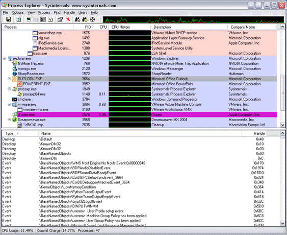
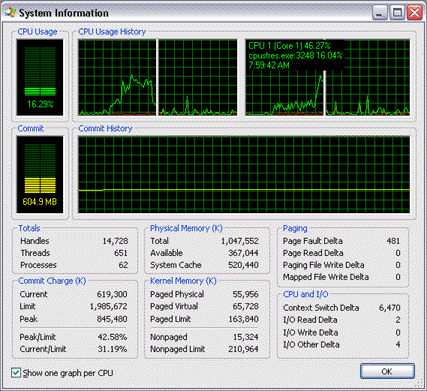

Process Explorer
Awards


Introduction
Ever wondered which program has a particular file or directory open? Now you can find out. Process Explorer shows you information about which handles and DLLs processes have opened or loaded.
The Process Explorer display consists of two sub-windows. The top window always shows a list of the currently active processes, including the names of their owning accounts, whereas the information displayed in the bottom window depends on the mode that Process Explorer is in: if it is in handle mode you'll see the handles that the process selected in the top window has opened; if Process Explorer is in DLL mode you'll see the DLLs and memory-mapped files that the process has loaded. Process Explorer also has a powerful search capability that will quickly show you which processes have particular handles opened or DLLs loaded.
The unique capabilities of Process Explorer make it useful for tracking down DLL-version problems or handle leaks, and provide insight into the way Windows and applications work.
Process Explorer works on Windows 9x/Me, Windows NT 4.0, Windows 2000, Windows XP, Server 2003, and 64-bit versions of Windows for x64 processors, and Windows Vista.


What's new in Version 10.2:
- Vista integrity level and virtualized columns and process properties
- Signed driver for 64-bit Vista for x64 processors
What's new in Version 10.1:
- Vista process cycle counters in process properties and as column
- Service permissions viewing and editing
- Workaround for .NET runtime handle leak
- Many new I/O columns and process properties
- System and per-process I/O bytes history graphs
- I/O history minigraph
- Memory commit history minigraph
- Optional I/O history tray icon
- Windows 64-bit for Itanium support
What's new in Version 10.0:
- The process column is locked on the left side so that it doesn't scroll horizontally out of view
- You can configure custom column selections and save them as easy-to-access column sets
- Image verification option now verifies images in the background
- More refresh intervals
- Runas menu entry in the File menu
- Run as Limited User menu entry in the File menu to run a process without administrative privileges and group membership
- Process menu includes Restart item to kill and then restart a selected process
- Can suspend individual threads on Threads page of Process Properties dialog
- The Find Window target moves Process Explorer's main window to the back to get it out of the way
- Close Window command uses same End Task functionality as Task Manager
- Show New Processes option scrolls display to make new processes visible
- Heuristics to detect more image packers
- User name of account in which Process Explorer is running is shown in the title bar
- Services can be stopped, resumed, and paused from the Services tab of the Process Properties dialog
- The DLLs that host SvcHost processes are listed in the Services tab of the Process Properties dialog
- Services running within a process display on the process' tooltip
- As a parallel to the CPU Usage History column there's now a Private Bytes Usage History column
- The Process view includes columns that show the working set breakdown of the process in shared, shareable and private pages
- New delta private-bytes column to show changes in private virtual memory usage
- Can copy lines from the Process, DLL and Handle views to the clipboard
- Option to show pagefile-backed (unnamed) sections in DLL view
- DLL and handle searching consolidated
- The DLL view includes columns that show the working set contributions in shared, shareable, and private pages
- The DLL a Rundll32 process hosts is shown in its process tooltip
- Packed DLL highlighting in DLL view
- Image signing verification available for DLLs
- Better DLL properties dialog
- Object address shown in Object Properties dialog
- File object share flags column for Handle view
What's new in Version 9.2:
- CPU history in tray icon
- CPU history column
- I/O delta column
- Process security editing
- Reports loaded 32-bit DLLs on Windows 64-bit
- Support for Windows Vista
- Buffer overflow bugfix in v9.25 and higher
What's new in Version 9.1:
- x64 and x86 executables are in a single binary
- x64 kernel and user-mode stack support
- New Verified Company column shows image signer information
- Strings tab in process properties dialog has in-memory image scan option
- Highlighting for images that are packed (have compressed or encrypted code, which is common in malware)
- Window menu on process context menu allows for minmizing, maximizing, and restoring windows
What's new in Version 9.0:
- System information dialog has per-CPU graph option with hyperthreaded and NUMA processor information
- A Users menu duplicates the functionality of Task Manager's Users tab, showing Terminal Services session information and supporting logoff, disconnect, and sending messages
- On XP SP2 and higher the TCP/IP tab displays the thread stack at the time an endpoint was opened
- The tray icon context menu includes the shutdown menu
- Search engine option to use Google or MSN Search
- Object address column is available for the handle view
- Image signatures can be checked on-demand in the process properties dialog
- Process explorer is digitally signed with Sysinternals' Verisign Class 3 signing certificate
What's new in Version 8.61:
- Data Execution Protection (DEP) status on process image tab and as column
- Copy-to-clipboard from process environment variable and strings dialogs
- Can select and copy text strings of process image properties page
- Multi-row tabs on process properties dialog
- Image signing verification on process image properties dialog
- Mini-CPU usage graph on toolbar
- Command-line option for specifying Process Explorer priority
- Manual refresh (F5) forces recheck of job and .NET process status
- Single-clicking on tray icon minimizes and restores main window
What's new in Version 8.50:
- Finder tool for identifying the process that owns a selected window
- Strings listings for process and DLL images
- Google menu item for searching process and DLL information
- Tray tooltip shows highest-CPU consuming process
- Window status column (like Task Manager's Status column on the Applications tab)
- DLL view for System process shows list of loaded device drivers
What's new in Version 8.40:
- TCP/IP process properties page shows active TCP and UDP endpoints
- Display updating code eliminates all flicker
- 64-bit version shows which processes are 64-bit on process properties and adds 64-bit process column
- Additional opacity settings
- Improved symbol support
What's new in Version 8.30:
- Runs in non-admin account
- Treeview functionality to collapse and expand process subtrees
- Can bring process-owned window to the foreground
- System CPU graph shows timestamps and most-active process for any given point
- Per-process graph data tracked even when main window is minimized to tray
- Per-process graph data displays timestamps
- Tray icon has black background
- Can set process CPU affinity
- Process tooltip no longer between mouse pointer and process name
- Ability to add a comment to processes and new comment column
- More system information, including I/O deltas and paging data
- New process columns for I/O delta and page-fault delta
- More process performance information in process properties dialog
- Improved performance
What's new in Version 8.20:
- Can open multiple process properties dialogs simultaneously
- Process properties and thread stack dialogs are resizable
- System information dialog CPU and memory usage graphs like Task Manager
- More performance data on the System Information dialog
- Per-process CPU and memory graph tab in process properties
- Opacity settings
- New tray window context menu options
- More performance information on process properties dialog
- Lock option in shutdown menu
- Reconfigured menu items and highlighting configuration
- New status bar column options
What's new in Version 8.10:
- Status bar information is configurable to show CPU usage, commit charge, # of processes, and more
- Can terminate individual threads
- New Shutdown menu for logging off and shutting down the system
- Only allow one instance option
- Auto-open of lower pane when a find result is clicked
What's new in Version 8.0:
- .NET tab for .NET processes that shows AppDomains and .NET performance counters
- When the .NET Framework is detected a .NET tab on the column selection dialog for adding .NET performance counters
- Option to show only .NET processes
- Option to only show your own processes
- System Information dialog showing the same memory counters as Task Manager (when symbols are configured, also shows maximum paged and nonpaged pool values)
- Better symbol configuration guidance
- Difference highlight duration is configurable
- Tray icon for CPU usage that's yellow when usage is > 70% and red when > 90%
- Minimize-to-tray option
- Highlight color configuration dialog
- Context switch and context-switch delta columns
- Run processes using the system Run dialog from the File menu
- Replace task manager option so that when you run Task Manager Process Explorer runs instead
- Only non-zero CPU usage, .NET counters and context-switch values are displayed to clearly highlight process activity
- Search for DLLs or handles regardless of what mode the lower pane is in
- Correct icons for MMC windows
- Mouse hover over process names and DLL names shows full path of executable or DLL
Other Process Explorer features include:
- Support for full handle viewing on Win9x/Me (with the exception of Registry key handles)
- Process icons
- Service process highlighting
- Process tree display
- Configurable refresh rate
- Refresh highlighting: new entries in the process, handle and DLL views are green, and deleted ones red
- Listview tooltips
- DLL descriptions in the DLL view
- Highlights relocated DLLs
- Jump-to-entry in the find dialog
- Efficient refresh
- Runs on Windows 9x/Me
- Lists all process owners, even on Terminal Server systems
- Moveable columns
- Column selection and a wide variety of configurable process, DLL and handle columns
- Asynchronous updates of all views
- Configurable refresh highlighting effects
- Save function saves process view and current bottom view (handle or DLL)
- Minimize-to-tray option
- Process suspend/resume
- Thread details including stacks
- Fractional CPU usage
- Job object information
- Right-justified numeric columns with numeric formatting
- Mutex properties shows owning thread if mutex is owned
- More information in process properties
- Start time and CPU time process columns
- Option to hide the lower pane
- Kill process tree
- More accurate Registry key names for profile unload debugging
- Extensive help file
- Service descriptions on services tab of service process properties dialog
Installation
Simply run Process Explorer (procexp.exe).
The help file describes Process Explorer operation and usage.
If you have problems or questions please visit the Sysinternals Process Explorer Forum.
Related Tools
Here are some other handle and DLL viewing tools available at Sysinternals:
- Handle - a command-line handle viewer for Win9x/Me and NT/Win2K
- ListDLLs - a command-line DLL viewer for Win9x/Me and NT/Win2K
- PsList - local/remote command-line process lister for NT/Win2K
- PsKill - local/remote command-line process killer for NT/Win2K
Microsoft Process Explorer KB Articles
The following Microsoft KB articles reference Process Explorer for diagnosing or troubleshooting various problems:
In order to help us track its use, please download through the link that represents the operating system on which you will use or mostly use Process Explorer.
Note that the zip files are identical, and Process Explorer runs on all Windows platforms.
Download Process Explorer (x86 - 1.47 MB) - you plan on using Process Explorer on Win9x/Me
Download Process Explorer (x86 - 1.47 MB) - you plan on using Process Explorer on 32-bit NT/2K/XP/Server 2003
Download Process Explorer (x64 - 1.47 MB) - you plan on using Process Explorer on x64 64-bit XP/Server 2003
Download Process Explorer (x86 - 1.47 MB) - you plan on using Process Explorer on IA64 64-bit Server 2003
Back to Top